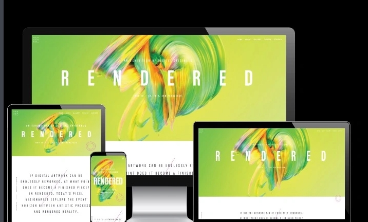

Dreamweaver介绍 |
|||
| 首页 | 工作界面 | 软件优点 | |
软件优点制作效率Dreamweaver可以用最快速的方式将Fireworks，FreeHand，或Photoshop等档案移至网页上。使用检色吸管工具选择荧幕上的颜色可设定最接近的网页安全色。对于选单，快捷键与格式控制，都只要一个简单步骤便可完成。Dreamweaver能与您喜爱的设计工具，如PlaybackFlash，Shockwave和外挂模组等搭配，不需离开Dreamweaver便可完成，整体运用流程自然顺畅。除此之外，只要单击便可使Dreamweaver自动开启Firework或Photoshop来进行编辑与设定图档的最佳化。 网站管理使用网站地图可以快速制作网站雏形、设计、更新和重组网页。改变网页位置或档案名称，Dreamweaver会自动更新所有链接。使用支援文字、HTML码、HTML属性标签和一般语法的搜寻及置换功能使得复杂的网站更新变得迅速又简单。 全面的CSS支持增强功能使用Dreamweaver CS4中增强的CSS实施工具令您的网站脱颖而出。借助“设计”和“实时视图”中的即时可视反馈,在“属性”面板中快速定义和修改CSS规则。使用新增的“相关文件”和“代码导航器”功能找到定义特定CSS规则的位置。 |
|||